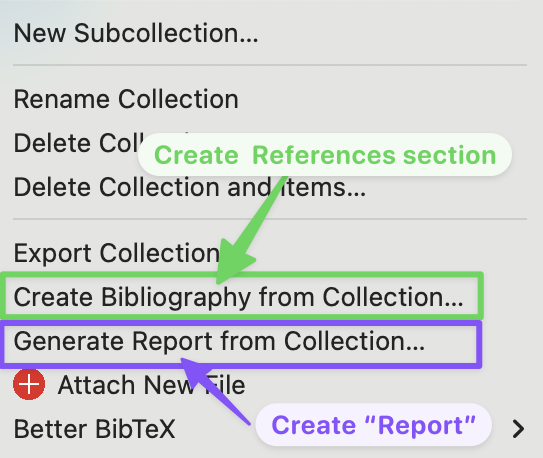

Take Home
More practice with Zotero
Instructions
Below are 8 items that need to be added to a new Zotero collection called [Your Name] APA Take-Home. For each item, you will need to identify which type of source it is and then create an entry with all the information needed for an APA 7 citation.
Use what you have learned thus far to track down the information you need for each source. You are free to use any method (i.e., drag/drop, manual, magic-wand, etc!) when adding it to your collection. But make sure to edit and revise the metadata (right-side panel) as needed. Do not assume that the automatic indexing process worked! Many times you will need to make adjustments to create your properly formatted APA 7 citations!
Before you begin adding items, do not forget to create a new collection in Zotero and name it [Your Name] APA Take-Home
Item 1. This journal article published in Memory & Cognition
If you want to use the DOI with the magic wandy thing, you need to start at the number 10.xxx. You do not include the https://doi.org/ at the beginning.
Also, make sure you have the correct page numbers.
Item 2. This journal article
If the journal article has an article number instead of a page range, include the word “Article” and then the article number instead of the page range.
The APA 7 citation is:
Item 3. This article titled Chimpanzees use self-distraction to cope with impulsivity
The APA 7 citation is:
Item 4. DOI: https://doi.org/10.1126/science.2658056
The APA 7 citation is:
Item 5. Who Moved My Cheese? ISBN: 978-0-399-14446-2 (Paperback – International Edition, March 4, 1999)
Make sure that you have the correct date information.
The APA 7 citation is:
Item 8. This magazine article about The science of melting cheese
You only need to include the author for this magazine article. No need to list the editor.
The APA 7 citation is:
Now that you have a second complete collection of sources, go back to your lab worksheet document.
Create an APA 7 style References section using your [Your Name] APA Take-Home collection. Follow the directions and copy/paste your properly formatted References list into your worksheet.

Once you have completed both sections of the worksheet, submit your assignment to the Lab 1: APA References Assignment on Canvas.